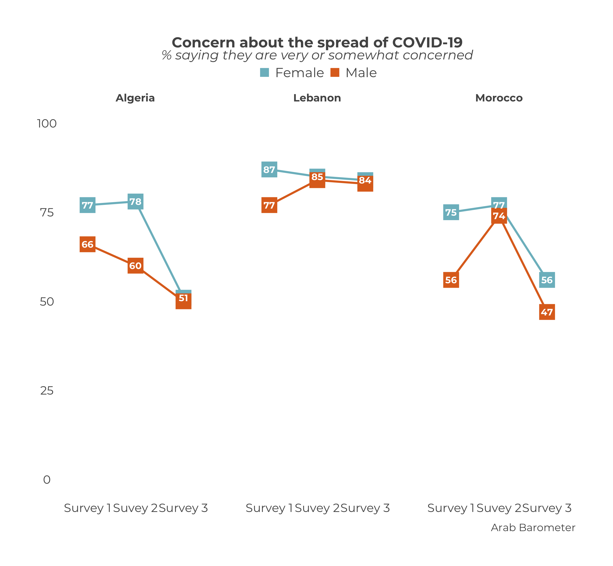
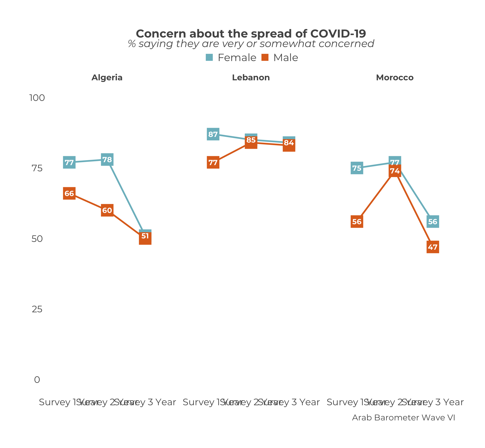
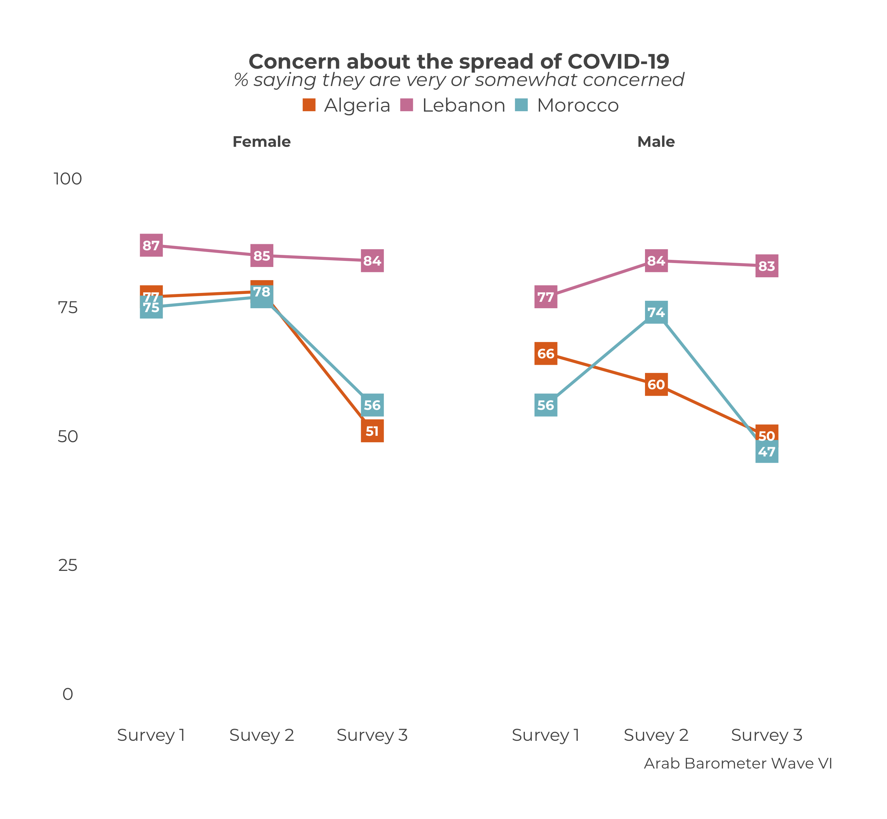

Chapter 13 Comparative Country Demographic Trend Graphs
This chapter will show you how to compare trend behavior of different demographics across countries. A comparative demographic trend graph can be shown in two different styles: either panels of graphs show the demographic trend by country, or panels of graphs showing the country trends by demographic. This chapter will demonstrate how to create both.
TL;DR
At the end, your code will look like the following:
df_list <- list(
survey1,
survey2,
survey3
)
ab_survey_dates <- c("Survey 1",
"Survey 2",
"Survey 3")
# One plot per Country
calculate_comp_trend_dem("Q1COVID19",
"gender",
df_list,
ab_survey_dates) |>
plot_comp_trend_dem(.caption = "Arab Barometer Wave VI")
# One plot per demographic
calculate_comp_trend_dem("Q1COVID19",
"gender",
df_list,
ab_survey_dates) |>
plot_comp_trend_dem(.facet_choice = "demographic",
.caption = "Arab Barometer Wave VI")The code produces this graphs:


The code should look similar to that in the previous chapter. The main difference is the inclusion of the demographic variable.
13.1 Prep Work
Just like in Chapter 12 (and all the other trend plot chapters), it is useful to do some prep work before hand. This makes your work more clear and your life easier down the line.
The prep work for creating a demographic comparative trend graph is exactly the same as the prep work suggested for creating a trend graph for a single country.
Create a Data Frame List
The first step is to create a list of data frames. This section is exactly the same as the one from here.
There should be one data frame for each period you wish to graph. That is, each data frame should be from a different survey you want to include in your graph. In the example for the chapter, we’re using the three surveys from Wave VI, which we call survey1, survey2, and survey3. Each survey is its own data frame.
The list of data frames should be in the order you want them to appear (ideally, chronologically). The data on the graph will show up in the order of the list. So if you create a list in the order list(survey2, survey1, survey3), the data from survey2 will show up before the data from survey1.
Please note: This is ambivalent to language! The plot_comp_trend_dem() function will assume the order of the list is the correct order, and treat it accordingly. When you enter a list as list(survey1, survey2, surveye3), the English graph will show the data right to left (survey 1 -> survey 2 -> survey 3), while the Arabic graph will show the data left to right (survey 3 <- survey 2 <- survey 1). You do not need to alter your input.
The data frame lists in the
Wave8TrendDatapackage do this step for you.
Create a Date Vector
This section is exactly the same as the one from here.
The next step is to create a vector of the dates you want to show on the x-axis of your graph. Branding guidelines call for the years in which the survey took place. For simplicity in the example, let’s just say "Survey X Year".
You need a date for each data frame in your data frame list. Otherwise, the function won’t know how to label the x-axis.
The dates should also be in the order you want them to appear. The dates should line up with the data frames. In the chapter example, the order of the data frames is survey 1, survey 2, survey 3. Therefore, the survey dates need to have the order survey 1 year, survey 2 year, survey 3 year.
Please note: This is ambivalent to language! Just as with the data frame list, the plot_comp_trend_dem() function will put the data in the correct order according to the language of the graph.
The data frame lists in the
Wave8TrendDatapackage do this step for you.
Now that we have defined our data frame list and survey dates, we can create our demographic trend plot.
13.2 Create a Summary
To create a demographic trend summary for multiple countries, use the calculate_comp_trend_dem() function.
In total, there are four necessary parameters: ab_var, demographic, ab_df_list, and ab_survey_dates. To see a complete list of parameters, including optional ones, use ?calculate_comp_trend_dem() in your R console.
The parameter ab_var is the variable you want to plot. It must have the same name in every data frame in the data frame list. If the variable you want to plot is named "Q101" in one sure, but "Q102" in another, the function will not include "Q102" in the plot. Computers can do a lot but as of yet they cannot think critically, so the onus is on you.
The trend data lists from the
Wave8TrendDatapackage ensure this is true for Wave VIII variables.
The parameter demographic is the demographic you want to see the variable trends for. Much like the ab_var parameter, it must have the same name in every data frame in the data frame list. If the demographic you want to plot is named "gender" in one sure, but "GENDER" in another, the function will break.
The trend data lists from the
Wave8TrendDatapackage ensure this is true for Wave VIII variables.
The parameter ab_df_list is a list of data frames. This is what we created here.
The data frame lists in the
Wave8TrendDatapackage do this step for you.
The parameter ab_survey_dates is a character vector of dates that will show up on the x-axis of the graph. This is what we created here.
The data frame lists in the
Wave8TrendDatapackage do this step for you.
Now let’s fill it in.
calculate_comp_trend_dem(
ab_var = "Q1COVID19", # Variable to graph
demographic = "gender", # Demographic to see over time
ab_df_list = df_list, # List of data frames
ab_survey_dates = ab_survey_dates # Vector of survey dates
)| Survey | Question | Country | gender | Percent |
|---|---|---|---|---|
| 1 | Q1COVID19 | Algeria | Female | 77 |
| 1 | Q1COVID19 | Algeria | Male | 66 |
| 1 | Q1COVID19 | Lebanon | Female | 87 |
| 1 | Q1COVID19 | Lebanon | Male | 77 |
| 1 | Q1COVID19 | Morocco | Female | 75 |
| 1 | Q1COVID19 | Morocco | Male | 56 |
| 2 | Q1COVID19 | Algeria | Female | 78 |
| 2 | Q1COVID19 | Algeria | Male | 60 |
| 2 | Q1COVID19 | Lebanon | Female | 85 |
| 2 | Q1COVID19 | Lebanon | Male | 84 |
| 2 | Q1COVID19 | Morocco | Female | 77 |
| 2 | Q1COVID19 | Morocco | Male | 74 |
| 3 | Q1COVID19 | Algeria | Female | 51 |
| 3 | Q1COVID19 | Algeria | Male | 50 |
| 3 | Q1COVID19 | Lebanon | Female | 84 |
| 3 | Q1COVID19 | Lebanon | Male | 83 |
| 3 | Q1COVID19 | Morocco | Female | 56 |
| 3 | Q1COVID19 | Morocco | Male | 47 |
We can see the output has 18 rows; one for each demographic for country for each survey. Let’s save the output as an object so we can plot that object in the next section.
13.3 Plot the Summary
To plot the summary we just created, we use the function plot_comp_trend_dem(). This one takes one and a half parameters.
…What?
Well, the only required parameter is ab_summary, which is the output of calculate_comp_trend_dem(), our summary. The “half” parameter is the .facet_choice parameter.
There is a lot of information we are trying to include in one plot here. In order to effectively communicate the trend, we need to decide whether to group the data by country or by demographic. You do this by setting .facet_choice to either "Country" or "demographic".
By default, .facet_choice is set to "Country". If the user does not enter anything for the .facet_choice, the graph produced will display results by country. If the user wants to display the results by demographic, they will need to set .facet_choice to "demographic". Hence, “half” a parameter. The function will still work without the user explicitly changing the .facet_choice parameter, but it is still an important parameter to be aware of.
The next two sections will go through the each case of .facet_choice.
13.3.1 Option 1: Facet choice is "Country" (default)
Let’s start with wrapping the graph by country, as that is likely the most common setting and the default.
Since .facet_choice = "Country" is the default setting, the user does not need to explicitly include it.

Nearly there! What still needs to be changed?
The caption, of course! Just as in all the other plot_ functions in the ArabBarometR package, you can change the caption using the .caption parameter.
Putting all the steps together, we get the first half of the code we started with.
df_list <- list(
survey1,
survey2,
survey3
)
ab_survey_dates <- c("Survey 1 Year",
"Survey 2 Year",
"Survey 3 Year")
calculate_comp_trend_dem("Q1COVID19",
"gender",
df_list,
ab_survey_dates) |>
plot_comp_trend_dem(.caption = "Arab Barometer Wave VI")
Option 2: Facet choice is "demographic"
Now we will go through how to wrap the graph by demographic. Using this setting will produce a graph that has one title and subtitle, but multiple plots, just as in the previous section. Now, each plot will show trend lines for each country, but only for a single demographic category.
In this example, we use “gender”. That means when we wrap by demographic, there will be one comparative trend graph just showing the trends of men and one comparative trend graph just showing the trends of women.
Nearly there! What still needs to be changed?
The caption, of course! Just as in all the other plot_ functions in the ArabBarometR package, you can change the caption using the .caption parameter.
plot_comp_trend_dem(
comparative_dem_trend_summary,
.facet_choice = "demographic",
.caption = "Arab Barometer Wave VI"
)
Putting all the steps together, we get the second half of the code we started with.
df_list <- list(
survey1,
survey2,
survey3
)
ab_survey_dates <- c("Survey 1 Year",
"Survey 2 Year",
"Survey 3 Year")
plot_comp_trend_dem("Q1COVID19",
"gender",
df_list,
ab_survey_dates,
"demographic",
.caption = "Arab Barometer Wave VI")With both options demonstrated, we have the complete original code.
df_list <- list(
survey1,
survey2,
survey3
)
ab_survey_dates <- c("Survey 1",
"Survey 2",
"Survey 3")
# One plot per Country
calculate_comp_trend_dem("Q1COVID19",
"gender",
df_list,
ab_survey_dates) |>
plot_comp_trend_dem(.caption = "Arab Barometer Wave VI")
# One plot per demographic
calculate_comp_trend_dem("Q1COVID19",
"gender",
df_list,
ab_survey_dates) |>
plot_comp_trend_dem(.facet_choice = "demographic",
.caption = "Arab Barometer Wave VI")13.4 Extras
13.4.1 Human Readable
If you just want to look at the summaries and not necessarily create a plot, the output of calculate_comp_trend_dem() might not be the easiest to understand from a glance. There is a parameter called human_readable that is designed to help with that.
By default, human_readable is set to FALSE and each row is unique to the survey-country-demographic. If human_readable is set to TRUE, each is unique to a country-demographic and there are columns for each survey.
calculate_comp_trend_dem(
ab_var = "Q1COVID19",
demographic = "gender",
ab_df_list = df_list,
ab_survey_dates = ab_survey_dates,
human_readable = FALSE # This is the default
)| Survey | Question | Country | gender | Percent |
|---|---|---|---|---|
| 1 | Q1COVID19 | Algeria | Female | 77 |
| 1 | Q1COVID19 | Algeria | Male | 66 |
| 1 | Q1COVID19 | Lebanon | Female | 87 |
| 1 | Q1COVID19 | Lebanon | Male | 77 |
| 1 | Q1COVID19 | Morocco | Female | 75 |
| 1 | Q1COVID19 | Morocco | Male | 56 |
| 2 | Q1COVID19 | Algeria | Female | 78 |
| 2 | Q1COVID19 | Algeria | Male | 60 |
| 2 | Q1COVID19 | Lebanon | Female | 85 |
| 2 | Q1COVID19 | Lebanon | Male | 84 |
| 2 | Q1COVID19 | Morocco | Female | 77 |
| 2 | Q1COVID19 | Morocco | Male | 74 |
| 3 | Q1COVID19 | Algeria | Female | 51 |
| 3 | Q1COVID19 | Algeria | Male | 50 |
| 3 | Q1COVID19 | Lebanon | Female | 84 |
| 3 | Q1COVID19 | Lebanon | Male | 83 |
| 3 | Q1COVID19 | Morocco | Female | 56 |
| 3 | Q1COVID19 | Morocco | Male | 47 |
calculate_comp_trend_dem(
ab_var = "Q1COVID19",
demographic = "gender",
ab_df_list = df_list,
ab_survey_dates = ab_survey_dates,
human_readable = TRUE # This is NOT the default
)| Question | Country | Demographic | Wave1 | Wave2 | Wave3 |
|---|---|---|---|---|---|
| Q1COVID19 | Algeria | Female | 77 | 78 | 51 |
| Q1COVID19 | Algeria | Male | 66 | 60 | 50 |
| Q1COVID19 | Lebanon | Female | 87 | 85 | 84 |
| Q1COVID19 | Lebanon | Male | 77 | 84 | 83 |
| Q1COVID19 | Morocco | Female | 75 | 77 | 56 |
| Q1COVID19 | Morocco | Male | 56 | 74 | 47 |
The default is set to FALSE because that is the structure plot_comp_trend_dem() expects. If you set human_readable to TRUE and use that output in plot_comp_trend_dem(), you will get an error.
13.4.2 Select Countries
By default, calculate_comp_trend_dem() plots data for all the countries in the data. To learn how to plot data from select countries, see the chapter on selecting countries.
13.4.3 Font Size
The font size default brand size is used for the graph text. You can learn how to change that in the chapter on changing the font size.
13.4.4 Colors
You can learn how to change the colors for the comparative trend graph in the chapter on changing graph colors.